Un chat que actúa
Diza abre los ficheros, lanza los comandos y aplica los cambios sobre el proyecto que tienes abierto. No te cuenta lo que haría.
Entorno de desarrollo de escritorio
Editor, terminal, Git, explorador y una IA con acceso real al proyecto. No en pestañas distintas ni en aplicaciones distintas: en el mismo sitio, trabajando sobre lo mismo.
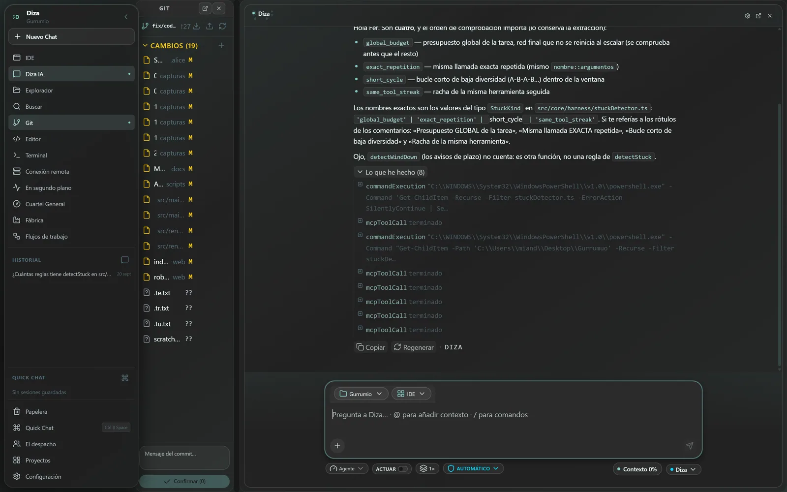
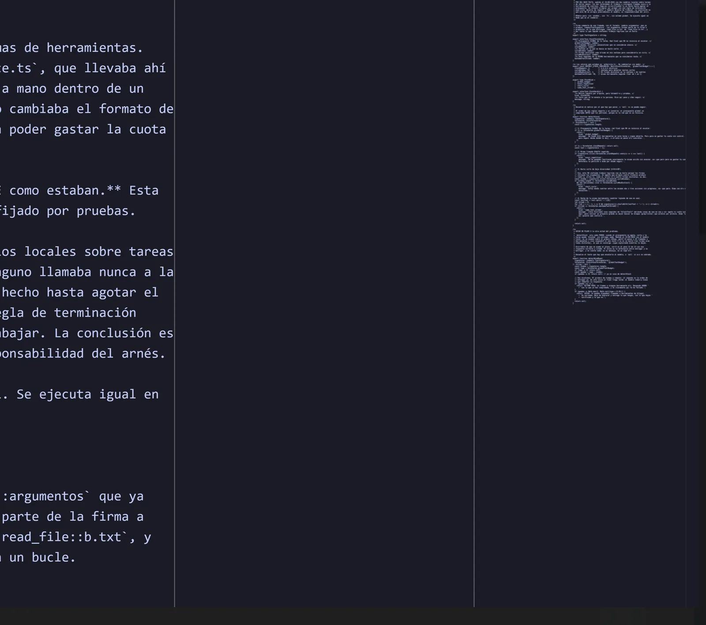
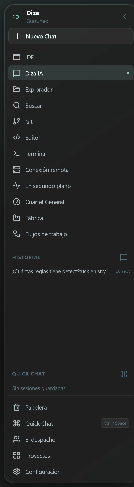
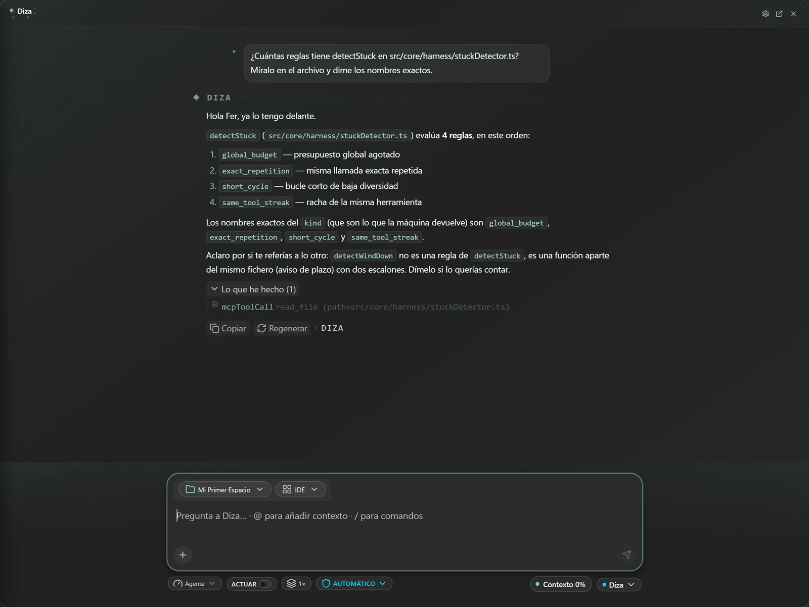
Lo que en otras herramientas son cuatro programas abiertos a la vez, aquí es una sola ventana.
No es un IDE con un chat al lado
Y un agente de terminal hace las dos cosas sin dejarte mirar. IaDiza Desktop junta las tres piezas donde deben estar: a la vista, sobre el mismo proyecto, y con todo lo que se toca escrito en un sitio al que puedas volver.
Diza abre los ficheros, lanza los comandos y aplica los cambios sobre el proyecto que tienes abierto. No te cuenta lo que haría.
Editor con resaltado, árbol del proyecto, panel de problemas y terminal. Una superficie propia para cuando toca escribir código.
Rama, cambios y diferencias dentro del escritorio. Ves qué se ha tocado antes de confirmarlo.
Varias IAs sentadas a la misma mesa sobre el mismo asunto. Cada una aporta; tú lees las respuestas juntas y decides.
Registra tu clave de los principales proveedores de IA del mundo y elige el modelo por conversación. El que quieras, cuando quieras.
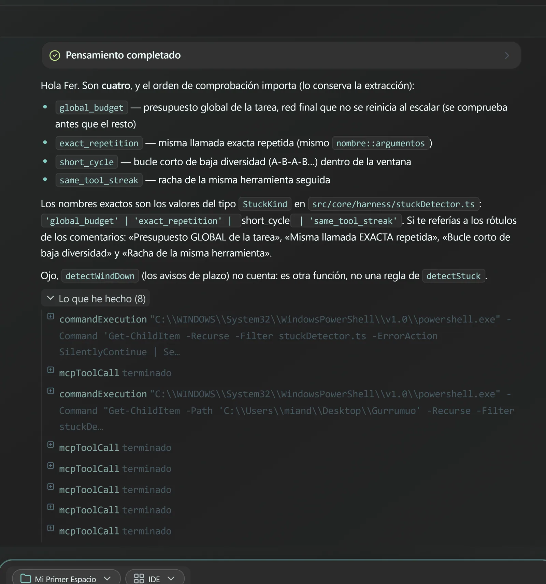
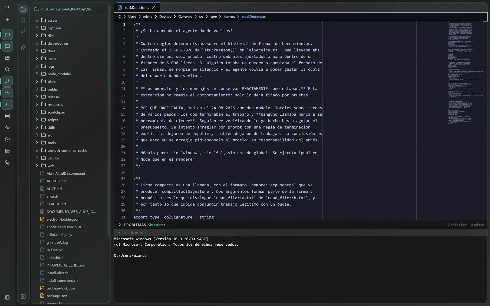
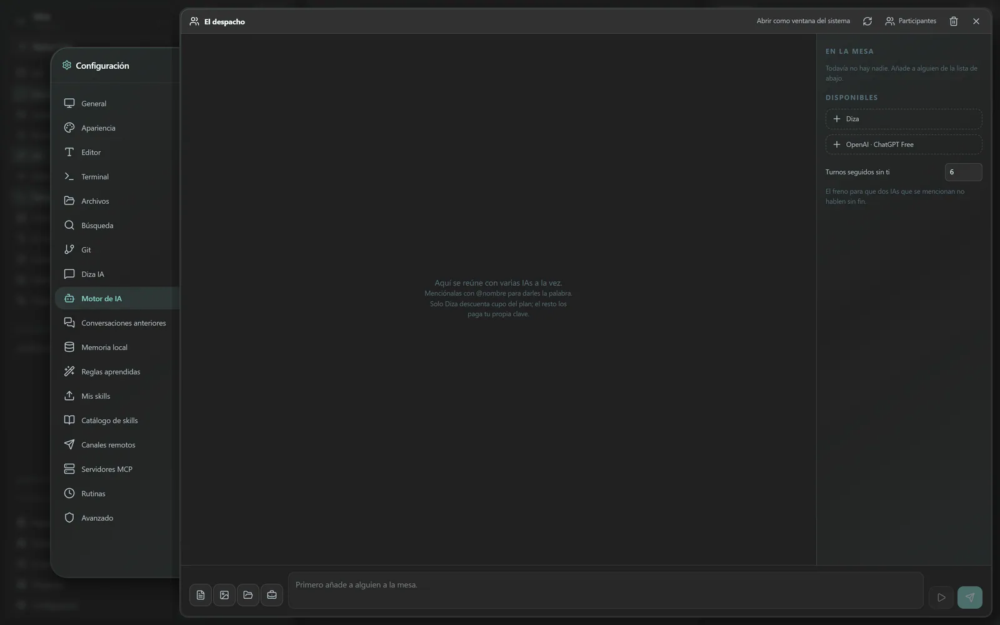
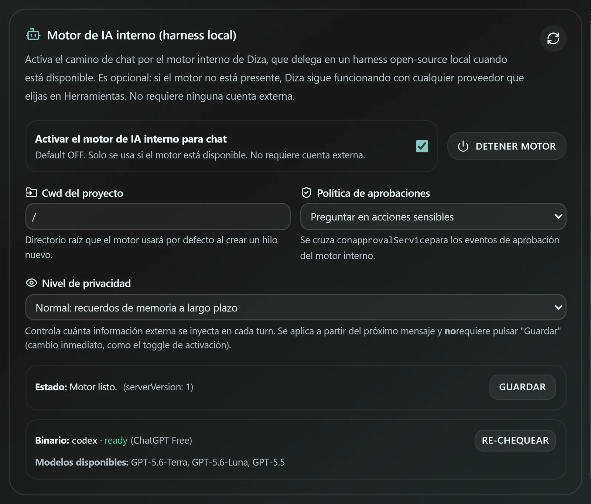
Capturas reales de la aplicación, sin retocar.
La interfaz entera, no cuatro botones: menús, ajustes, avisos y diálogos de permiso. Se cambia en caliente, sin reinstalar ni reiniciar.
es · en · pt · fr · de · it · nl · pl · ja · zh · +17
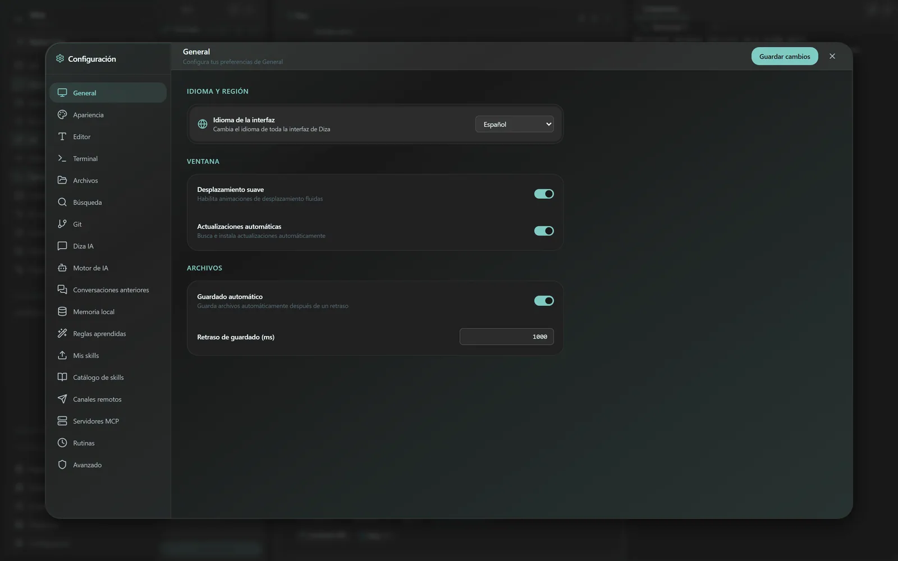
Y esto es lo que cabe en una página. El resto se descubre usándolo: paneles que se separan en ventanas propias, rutinas en segundo plano, conexión a máquinas remotas y un largo etcétera.
Doce temas de serie
Pasa el ratón por un tema y la página entera se viste con él. Haz clic y se queda.
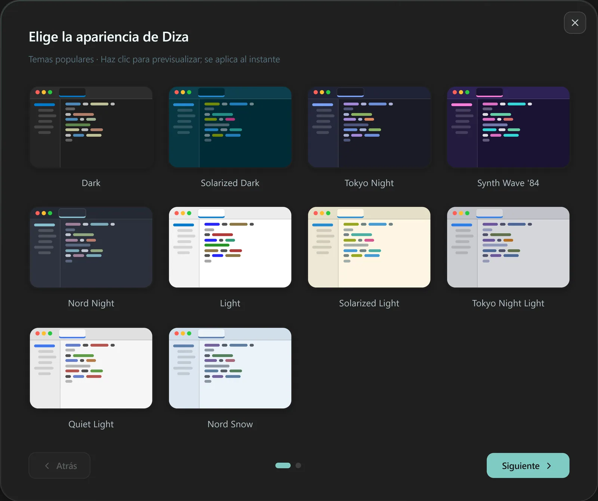
La que trabaja dentro
Tu compañera para el desarrollo diario. No espera a que le pegues el código en un cuadro de texto: vive dentro del escritorio, con el proyecto delante. Lo lee, lo ejecuta, lo cambia y te enseña exactamente qué ha hecho.
Busca por el proyecto y abre los ficheros que necesita. No contesta de memoria sobre código que no ha mirado.
Tests, dependencias, builds. Lee la salida y actúa en consecuencia, en lugar de dar por bueno el primer intento.
Los cambios llegan a una tarjeta de revisión: qué ficheros tocó y qué escribió. Tú decides qué se queda.
Tres niveles de confianza. En el más estricto cada comando pasa por ti; en el más suelto trabaja sola y te lo cuenta después.
Nada de subir el proyecto a ningún sitio para que lo mire. Diza lee y escribe en tu disco, en tu carpeta, como lo harías tú.
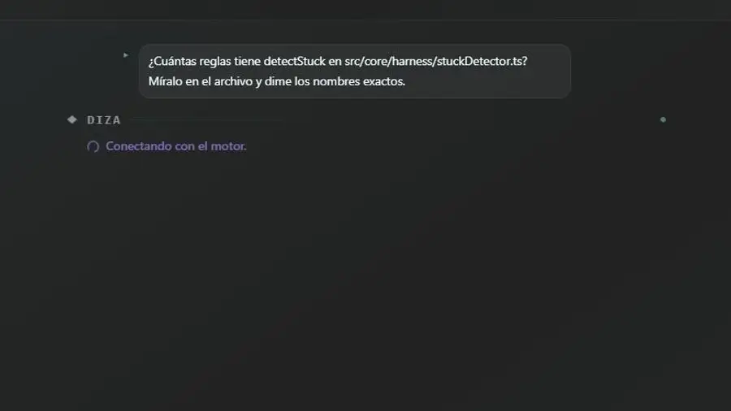
Debajo de cada respuesta queda su registro. Se despliega y ves qué herramienta usó, sobre qué fichero y con qué resultado. No se borra al cerrar: está ahí mañana.
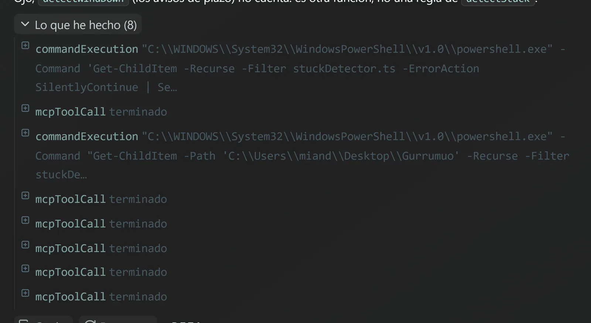
Confidencialidad
Las conversaciones, la memoria, los ficheros y los ajustes viven en tu disco. No en un servidor nuestro: no hay ninguno con tu proyecto dentro.
Lo único que viaja es lo que la IA necesita leer para contestarte, y va al modelo que hayas elegido tú. Nada más, y a nadie más. Si quieres ni eso, el motor admite un servidor de inferencia en tu propia red.
Tu código sigue siendo tuyo. Ahora tienes con quién escribirlo.
Descarga gratuita
Sin cuenta, sin tarjeta y sin periodo de prueba. Diza viene dentro; si prefieres tu propio modelo, pones tu clave en ajustes y listo.
Windows 10+macOS 12+Linux · deb · AppImage